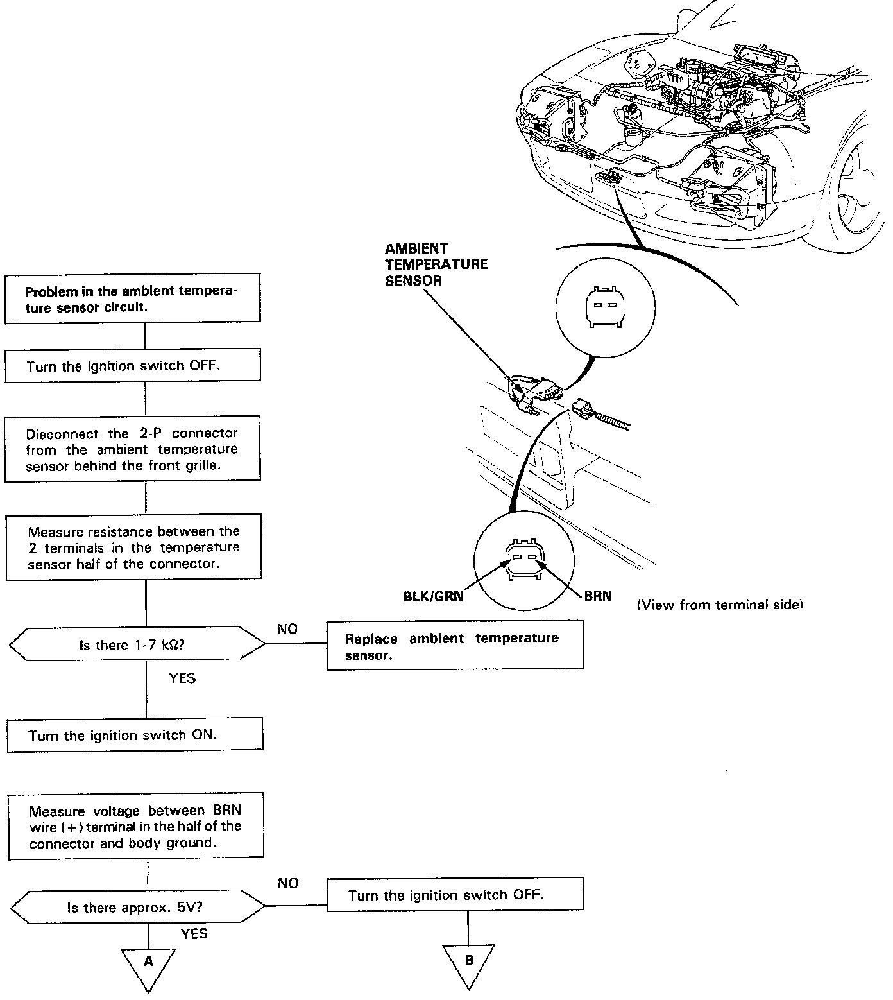
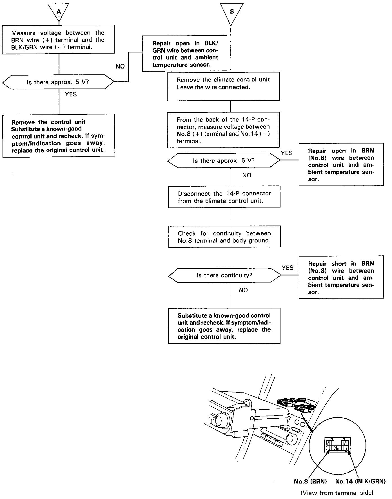

Ambient Temperature Sensor / Switch HVAC: Testing and Inspection
Ambient Temperature SensorSelf-diagnosis indicator light B comes on: Indicates a problem in the ambient temperature sensor circuit. Use a digital multimeter (KS-AHM-32-003) to check it.
The ambient temperature sensor is a temperature dependent resistor (thermistor). The resistance of the thermistor decreases as the temperature outside the car increases.
Part A:

Part B:
